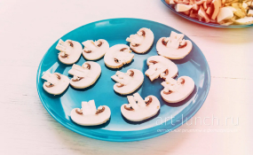
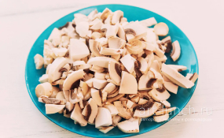
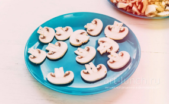
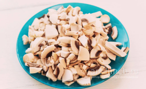
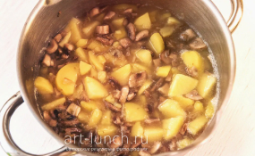
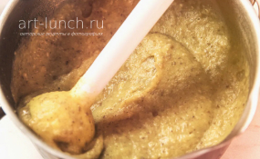
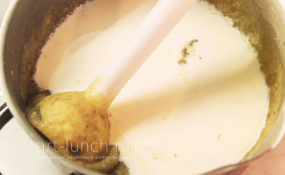
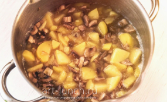
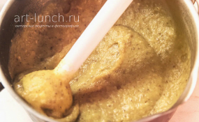
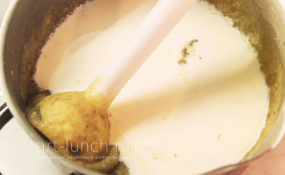

Часто хочется разнообразия в ежедневном меню и вместо обычного супа попробовать что-нибудь интересное, но не сложное. Поэтому эта страница посвящена грибному крем-супу, который мы будем готовить на основе простого картофельного супа-пюре. Вкус грибного крем-супа получается очень насыщенным благодаря сливкам и грибам. Я буду использовать грибы шампиньоны — недорого, круглогодичная доступность и лёгкий намёк на французскую кухню. Так же шампиньоны одни из самых легко усваиваемых грибов. В некотором смысле этот суп будет «лёгкой прогулкой» для вашего желудка, который, быть может, скажет вам спасибо за эту лёгкость и питательность.
- 1)картофель 500 г
- 2)вода 600 мл
- 3)грибы шампиньоны 250 г
- 4)лук 150 г
- 5)сливки 10-20% 200 г
- 6)соль по вкусу
Чистим и мелко нарезаем лук. Разогреваем подсолнечное масло на сковороде и на средней мощности обжариваем лук минут 5 до золотистого состояния. Масло я использую рафинированное, чтобы оно не влияло на вкус крем-супа.
Переходим к грибам. Из пары шампиньонов нарезаем несколько не толстых ломтиков из середины, как показано на фото, штук 10 хватит. Откладываем их на тарелку в сторону: они нам понадобятся в дальнейшем для подачи крем-супа.
Оставшиеся грибы нарезаем довольно крупно.
Добавляем грибы (кроме тех, что мы нарезали для подачи) к луку в сковородку, солим и обжариваем минут 8-10 чтобы шампиньоны подрумянились и усилили свой грибной вкус.
Наливаем в кастрюлю воды в количестве 600 мл и ставим на плиту. Пока вода будет закипать чистим картофель, моем и нарезаем его на кусочки средних размеров (не крупнее грецкого ореха). Бросаем в кастрюлю, солим по вкусу и варим до полного размягчения картофеля. У меня это заняло 10 минут.
Добавляем в кастрюлю обжаренные ранее грибы и лук, перемешиваем. Варим ещё 5 минут.
Снимаем кастрюлю с плиты и пюрируем суп блендером до однородного состояния. Само пюрирование у меня занимает 2-3 минуты, я люблю гомогенизированный суп, поэтому работаю блендером очень основательно.
Добавляем сливки, перемешиваем, доводим до кипения, постоянно помешивая, и отставляем кастрюлю — крем-суп готов.
Для подачи поджарим отложенные ранее несколько ломтиков грибов на сковороде с двух сторон. Сильно поджаривать не стоит — шампиньоны потемнеют и станут некрасивыми.
Грибной крем-суп готов, можно подавать. Разливаем горячий суп по тарелкам, сверху украшаем грибными ломтиками и зеленью (я использовал петрушку). По желанию можно добавить гренки и специи. Приятного аппетита!
 




 




